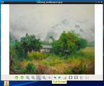
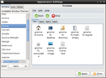
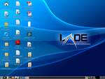
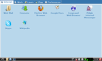
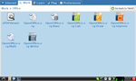
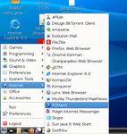
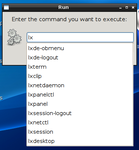
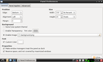
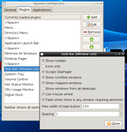

English
Português
Español
正體中文
LXDE.org
關於
下載
畫面展示
網誌
Wiki 文件
論壇
IRC 聊天室
參與
首頁
›
Image galleries
Screenshots
Easy & Fast File Management with PCManFM

GPicView - Fast and Easy Image Viewing

LXAppearance - Change Look & Feel

LXDE Desktop
LXDE Desktop Picture
LXDE Start Banner

LXLauncher

LXLauncher - Simple Tab set up according to freedesktop.org standards

LXPanel

LXpanel - Autocompletion

LXPanel - Preferences

LXpanel - Preferences
1
2
下一頁 ›
最後一頁 »
下載 LXDE
Debian GNU/Linux 7.6
USB/CD Image, i386 版本
USB/CD Image, AMD64 版本
Fedora LXDE Spin
USB/CD Image, i686 版本
USB/CD Image, x86_64 版本
Lubuntu 14.04
USB/CD Image, i386 版本
USB/CD Image, AMD64 版本
LXDE
Sourceforge 開發者郵件論壇
PCManFM 開發者郵件論壇
SF.net 專案網頁
PCManFM project page at SF.net
介面設計計畫
翻譯計畫
Translation project mailing list